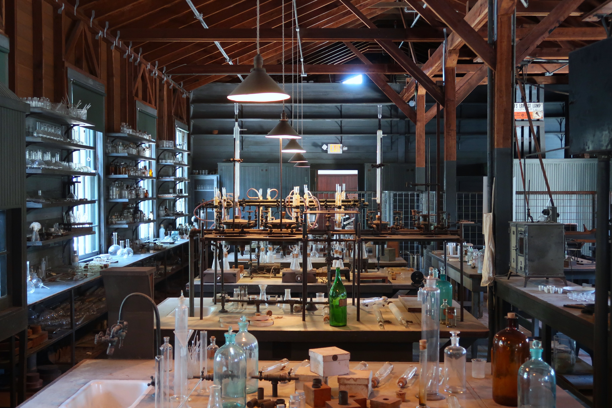

私はパナソニックで働きながら2019年に博士課程に進学しました。 今回は社会人博士課程について 私が考えてきたことを3回に分けて書きたいと思います。 第1回は、博士課程に進学するか、民間企業に就職するか悩んでいる方に対し、 私が思う社会人博士課程のメリットについてお話したいと思います。
社会人博士課程のよく言われるメリットとして、自分の働きたい会社に入ってから博士号を取得できる点が挙げられます。 一昔前は博士卒は修士卒より就職が難しいと言われましたが、 現在ではそのような傾向は少なくなってきているように感じます。 弊社でも、研究部門に配属される新入社員のうち博士卒と修士卒が同じくらいの人数の年もありました。 逆に、修士卒の場合は修士までの研究とは全く異なる分野のテーマに配属されるなど、希望通りの配属にならない場合もあります。
一般的な博士課程と社会人博士課程は何が違うの？
私が思う社会人博士課程のメリットは、選択肢を増やすことができる点です。

私が修士学生の時の研究テーマは「中間バンド型太陽電池」と呼ばれる 次世代太陽電池の材料をシミュレーションにより探索するという内容でした。 クリーンエネルギーデバイスに関する材料探索をやりたかった私にとっては、とてもやりがいのあるテーマで、研究に没頭しました。
しかしながら、この太陽電池を実用化に近づけるために最も取り組まなければならない根本的な課題をは何か？と考えると、 私のアプローチが最適な方法なのか、もっと他に解決すべき問題点があるのではないか、と疑問に感じるようになりました。 また、この太陽電池は太陽電池業界においてもかなりマイナーであり、学会発表などの場においても 私の研究内容について興味を持ってくださる方はあまりいらっしゃいませんでした。
つまり、修士の私が感じていたモヤモヤは
- 物事の本質的な課題に対してアプローチできているのか？
- 果たしてこの努力は誰の役に立つのだろうか？
というように、研究テーマの設定が原因でした。
学術界であれば、こうした基礎研究の積み重ねが、将来の全く新しい法則や原理の発見につながりますし、 あるいは、今すぐには役に立たなくても、何十年後に役に立つことも多々ありますので、どんな研究も重要だと思います。 ただ、当時の私にはそういった信念や覚悟がなかったんだと思います。

一方学術界と異なり、産業界では、時代のトレンドに合ったホットな分野の技術を最短の道のりで形にし、事業にすることを目的として研究開発を行います。 そのため、分野全体を把握し、本質的な課題となっているところを見極め、それに必要な技術を取り入れることをより重要視します。 今どんな分野・技術に勢いがあるのか、今後ホットになりそうなことは何か、ということに常にアンテナを張っている研究者が多く、 たくさんの情報が集まってくる環境です。
私の場合も、就職後にLiイオン電池材料や太陽電池材料、熱電変換材料など、様々な分野の材料開発に関わるうちに、 どこが本質的な課題となっていて、どの分野であれば私のスキルである材料シミュレーションが役に立つかを見定めることができました。
その中でも、次世代の太陽電池として注目度の高いペロブスカイト太陽電池の開発に携わる中で、 ペロブスカイト太陽電池の光吸収層に使われる、有機-無機ハイブリッド材料という新素材に興味を持ちました。 ペロブスカイト太陽電池については、こちらの記事にまとめましたのでご参照ください。
有機-無機ハイブリッド材料は、有機材料と無機材料という異種分野が融合した素材です。 この材料系は、有機材料と無機材料の両方のメリットを持ち合わせる今までにない素材であり、 また、その組み合わせから未だ見つかっていない素材が膨大に存在します。 今後、太陽電池だけでなく様々なデバイスに展開されていく将来性のある素材であると感じました。
そこで、有機-無機ハイブリッド材料のシミュレーションスキルを極めるために、 共同研究先の研究室の先生にこのテーマを提案し、社会人博士課程への進学を決めました。
このように、民間企業に就職し、修士学生の時よりもさまざまな分野の技術や素材に触れることで、 博士課程で研究したい研究分野の選択肢を増やし、その中から自分のやりたいことを選択することができました。 修士課程からそのまま進学する場合は、修士課程で過ごした研究室で博士課程も過ごすことが多いですが、 それに対し社会人博士課程は様々な選択肢の中から自分の極めたい道を選択できる点がメリットだと思います。

ただし、民間企業の研究開発は、悪い言い方をすれば流行に流されやすく、 私のように研究テーマがコロコロとかわることもありますし、 当然ながら、会社での仕事と学業を両立するのは大変です。 故に、自分の極めたい道が明確な修士学生の方には、そのまま博士課程に進学することをお勧めします。 一方で、現在学んでいる分野の研究開発を仕事にすることに自信がなく、極めたい道が明確ではない修士学生の方は、 一度民間企業に就職してから、やりたいことを見出し、社会人博士課程として極めることもありだと思います。
ここまで、一般的な博士課程と社会人博士課程の違いについて社会人博士課程の私が思うことをお話しました。 次回は、私はなぜ博士課程に進学したか？何がモチベーションだったのか？について書きたいと思います。